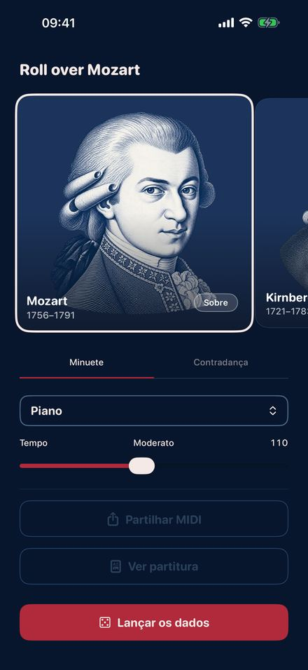
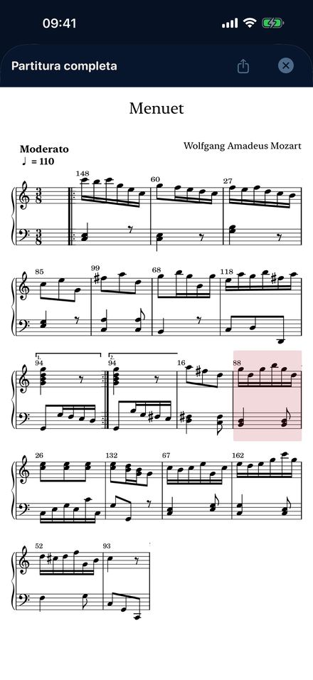
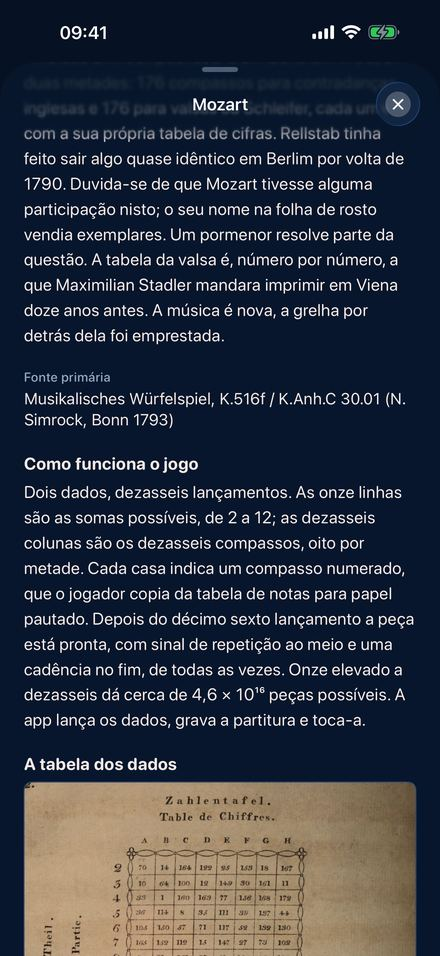
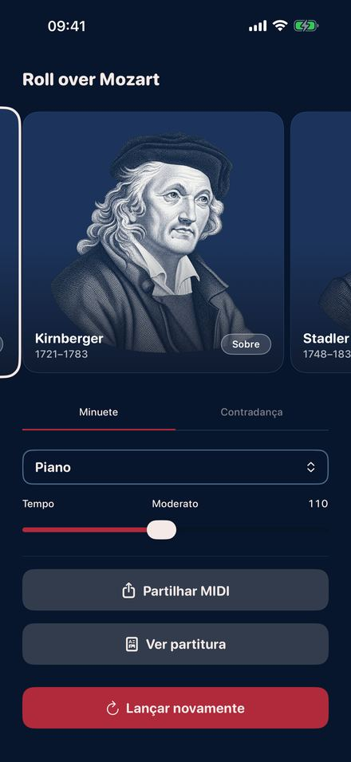

No século XVIII publicaram-se jogos impressos com que qualquer pessoa podia
compor sem saber ler uma nota. Cada lançamento aponta um compasso numerado numa
tabela. Dezasseis lançamentos dão uma peça acabada, no tom certo e com uma
cadência em condições no final. A Roll Over Mozart toca quatro desses jogos,
compasso a compasso, segundo as tabelas originais.
Brevemente na App Store.

Lança os dados

A partitura do teu lançamento

A tabela original

Quatro compositores
Quatro jogos impressos
MozartO Musikalisches Würfelspiel publicado em seu nome em Bona, em 1793: um minuete e uma contradança inglesa, 176 compassos numerados cada um, dois dados, dezasseis lançamentos.
KirnbergerBerlim 1757, o mais antigo de todos. Minuete e trio com um único dado, e uma polaca de 154 compassos com dois.
StadlerViena 1781. Minuete e trio de um beneditino que conheceu de perto Mozart e Haydn, impresso doze anos antes de o jogo de Mozart adotar a sua grelha de algarismos.
C.P.E. BachSeis compassos de contraponto duplo “sem conhecer as regras”. Qualquer voz superior assenta em qualquer voz inferior, e Bach conta a piada de cara séria.
O que fazes com ela
Lanças, e ouves logo o resultado.
Mudas o instrumento e o andamento enquanto a peça toca.
Segues a partitura do teu lançamento, compasso a compasso, enquanto soa.
Levas contigo: partitura em PDF, ou um ficheiro MIDI para qualquer programa de música.
Lês a história de cada edição, com a tabela de dados original e as páginas de compassos numerados.
Aqui não se inventa nada
Cada compasso foi escrito pelo compositor e impresso no século XVIII,
reproduzido sem mudar uma nota. Os dados só decidem a ordem, tal como estava
previsto. É a música generativa mais antiga de que há notícia, duzentos e
cinquenta anos antes do primeiro chatbot.
E ainda
Onze instrumentos, do piano e do cravo ao violino, à flauta e ao órgão de
igreja. Andamento de arrastado a veloz. Seis idiomas. Sem conta, sem publicidade,
sem rastreio, e funciona em modo de voo. iPhone e iPad com iOS 26.2 ou
posterior.